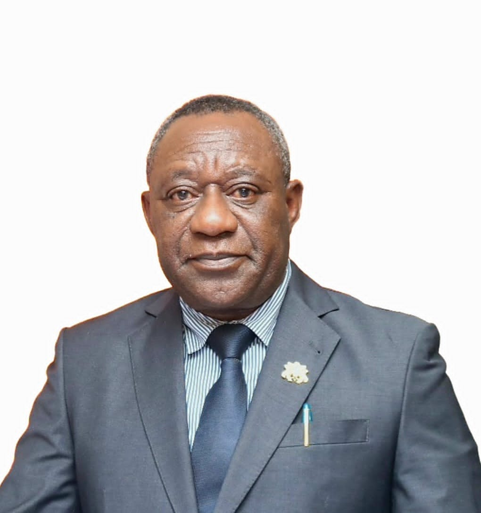

Prof. Felix Narku Engmann
Timetable
| 8:00am - 10:00am | 10:00am - 12:00pm | 12:00pm - 2:00pm | 2:00pm - 3:00PM | 3:00pm - 5:00PM | |
|---|---|---|---|---|---|
| Monday | Discrete Maths | Human Computer Interactions | Operations Research | Database Systems | |
| Tuesday | Backend Web Development | Management Information Systems | Systems Analysis and Design | Discrete Maths | |
| Wednesday | Operations Research | Systems Analysis and Design | Backend Web Development | ||
| Thursday | Management Information Systems | Human Computer Interaction | Database Systems | ||
| Friday |
What Our Student Says
Our students can testify the greatness in our academics and other activities in our school.

In our school, students are also pushed and encouraged to do their best and the higher up students. There is lots of diversity, and it's very good. As far as I know, the Girls' bathroom is kept clean and they supply girls with female supplies. Great school, I absolutely love it.
Christine Smith

Our school is one of the best schools I have seen. Most of the staff is wonderful and saftey drills are practiced monthly. The school has great counselors and extra time is provided for the students that have it.